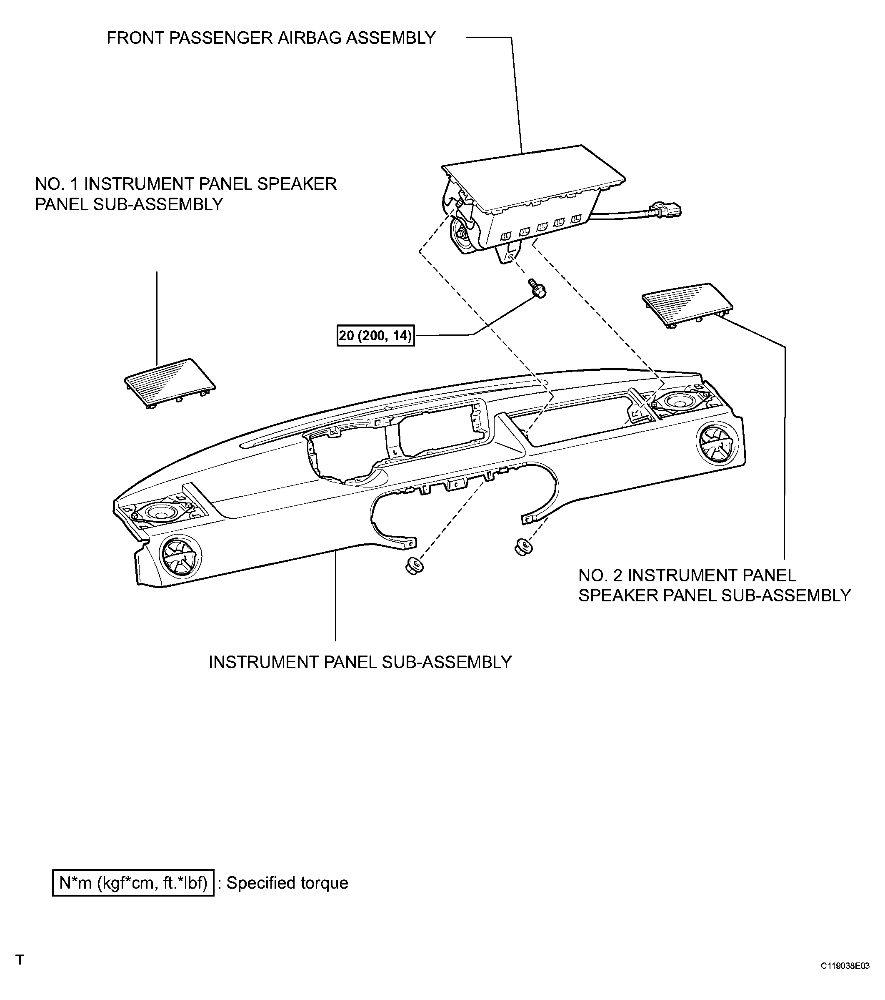

Home
>>
Scion
>>
2006
>>
xB Standard
>>
Repair and Diagnosis (Single Page)
>>
Restraints
>>
Air Bag, SRS
>>
Supplemental Restraint System
>>
Front Passenger Airbag Assembly
>>
Components
Front Passenger Airbag Assembly: Components
Fig 1: Identifying Front Passenger Airbag Assembly Components

Courtesy of © TOYOTA, LICENSE AGREEMENT TMS1002